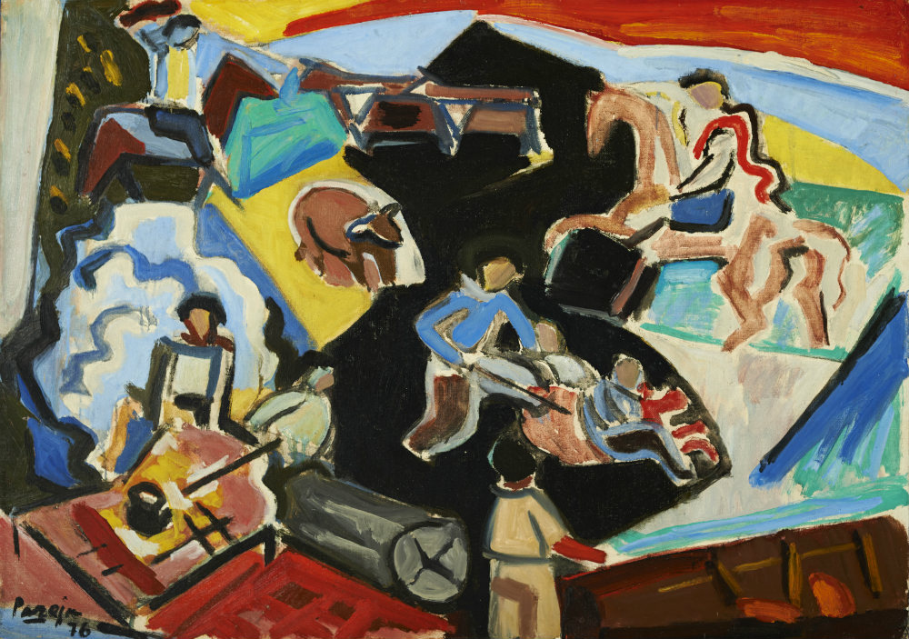

Miguel Ángel Pareja fue artista y docente de arte. Creía que cada uno debía emprender su camino de búsqueda para descubrir al artista que hay en su interior. En 60 años de pintura experimentó con distintas formas de pintar. De cada una de estas formas de pintar adquirió elementos y retornó siempre a su camino personal de búsqueda y descubrimiento. Incansable, nuestro artista logró un estilo propio
Cuando decimos corriente plásticas, nos referimos simplemente a una forma de la pintura. Existen muchas maneras de expresión plástica. También se les llama lenguajes. Todas las culturas a lo largo de las épocas han creado sus propias formas de pintura, expresando así mucho de sí mismas.
Veremos como la pintura de Miguel Ángel Pareja, pasó por las formas de la pintura del planismo, del cubismo y del expresionismo.
Planismo
Cubismo
Expresionismo
PLANISMO
Esta obra temprana corresponde al Planismo.
El planismo compone sus figuras con planos de color. Estos planos de color son como recortes que luego, ensamblados, dan por resultado figuras reconocibles, como el niño que vemos en esta obra.
Los planos de color se integran como en un rompecabezas generando efectos de luz y de sombra según el color, el tono y el matiz. Podemos verlo claramente en el detalle del niño que se encuentra a la derecha.
Estas formas de resolver el cuadro, pertenecientes al Planismo, fueron tomadas por Pareja. Podemos encontrar estos rasgos de la pintura planista en muchos de sus cuadros, incluso en cuadros que no se consideran estrictamente planistas. Pareja extrae del planismo ciertas ideas y estrategias y continúa su camino de búsqueda de su propia manera de pintar.
Recordemos lo visto anteriormente en la unidad dinámica ELEMENTOS DE COMPOSICIÓN.
CUBISMO
En la pintura de Pareja se encuentran elementos del cubismo.
El cubismo por sobre todo, no copia la realidad y sus elementos tal cual se ven. Representa personas, animales, objetos y paisajes de forma síntética, es decir de la forma más simple y reducida posible. Para representarlos utiliza figuras geométricos como cuadrados y triángulos.
Las figuras y los espacios se vuelven planos, sin profundidad, no hay tercera dimensión.Junto a las figuras planas se adelanta el fondo y todo queda en un mismo plano y con un mismo valor perceptivo.
El cubismo también propone un dibujo que muestra varios puntos de vista al mismo tiempo. Observemos esta obra de un gaucho tomando mate con su perro. Vemos el dibujo del perro con varias perspectivas mezcladas, mira el detalle: su cuerpo esta visto de costado, sus manos desde arriba, su cabeza ¡no se sabe! Puede ser de atrás o de costado. El artista descompone la idea de ‘perro’, armando de esta forma un nuevo perro.
Miguel Ángel Pareja tomó estos elementos del cubismo y los utilizó en muchas de sus obras. Incluso en obras que no serán consideradas cubistas. Algunas ideas del cubismo las hará suyas para siempre.
EXPRESIONISMO

El expresionismo ha sido otra de las formas con las que Pareja dio vida a sus cuadros.
El expresionismo en Miguel Ángel Pareja trata de una pincelada libre, sin correcciones, que logra comunicar acciones y sucesos. Pareja pinta y dibuja al mismo tiempo, con colores intensos y trazos fuertes. Dibuja el caballo de la manera más simple, con la menor cantidad de líneas posible, lo mismo el ternero, el fuego, el humo y los hombres.
Con su línea remarca rasgos y gestos, movimientos y acciones. El artista se ha liberado de la necesidad de copiar la realidad tal cual es y expresa sus sentimientos. Crea imágenes que transmiten lo esencial, lo que a él le importa, lo que él cree y siente. De esta manera, construye una realidad nueva.
Aquí también encontramos que el espacio tridimensional se ha eliminado y que todo es plano. Sin embargo, en muchas de las figuras que vemos se ha aplicado la idea de materia color a través de los planos color sombra, planos color luz y colores del espacio. Con estos planos luz y planos sombra, se refuerza una idea de movimiento y dinamismo
Esta pintura de una yerra en el campo tiene gran fuerza expresiva. Con formas simples y planos de color nos relata las acciones que realizan esos hombres de forma muy clara y precisa.
Conclusión:
Recordemos que para Pareja la pintura era un camino de búsqueda y de invención. El artista toma del planismo, el cubismo y el expresionismo formas con las cuales configurar una pintura que le sea propia. Va recogiendo diversos elementos para continuar su camino de conocimiento.